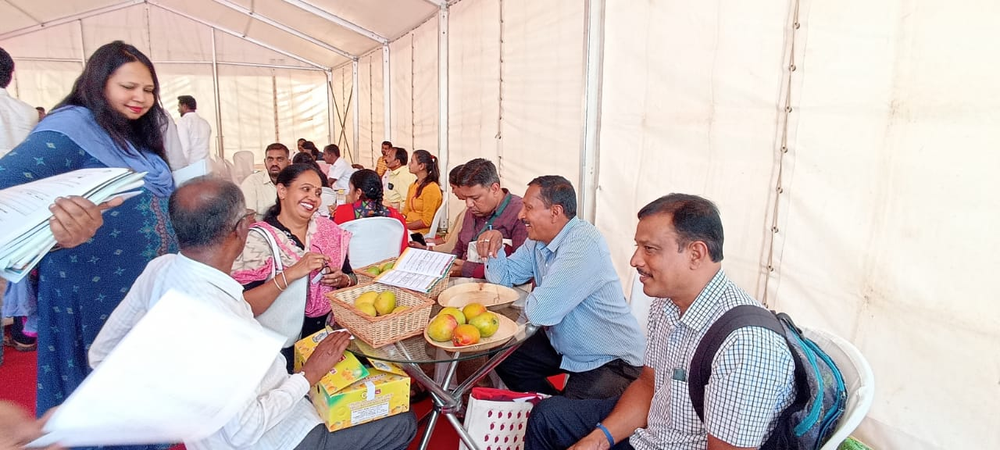
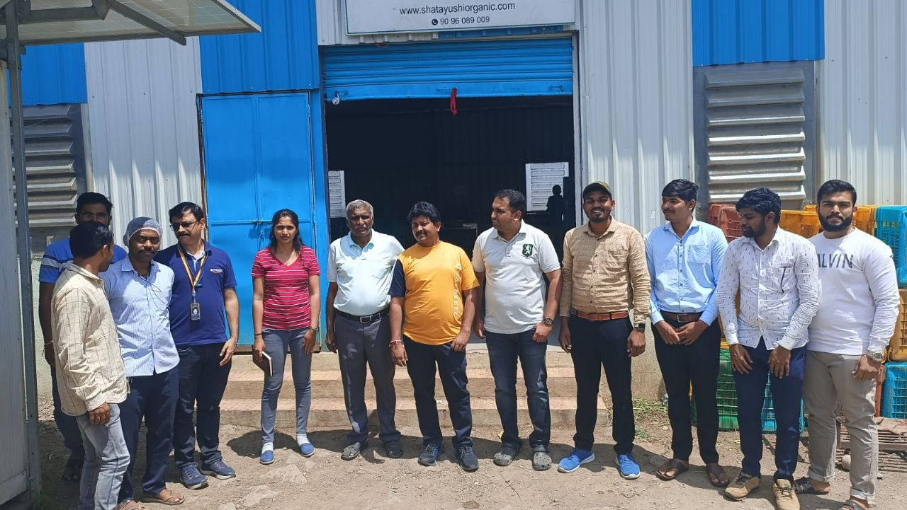
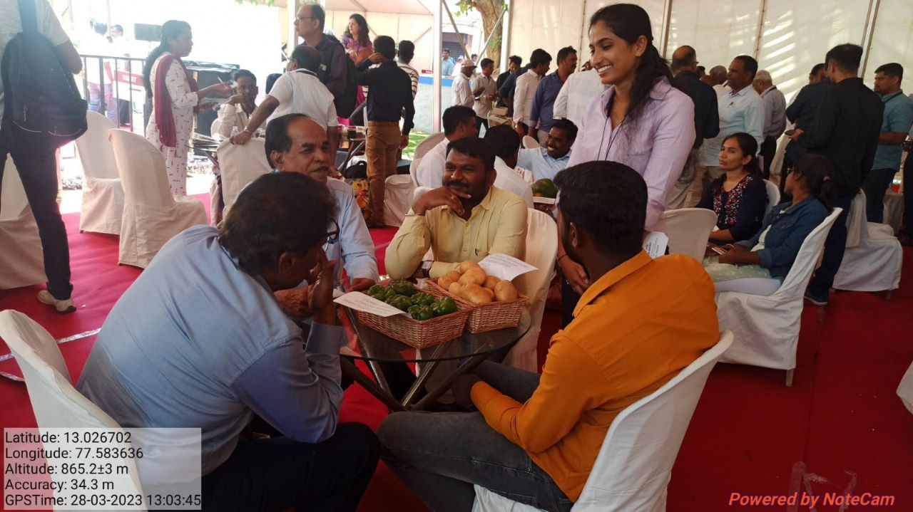

Organic farming-Management,Training & Demonstration
Organic farming is attracting global attention and it is opening new vistas for farming community to maximize earning and minimizing the damage to the mother earth, an aspiration of every farmer.
However, we observed in our experience people spending longer than time and resources in preparing the processes leading to successful implementation transition strategy crop planning, invest planning. We have more than 30 years of experience working with 10000 of farmers either directly or through government schemes in India.
We advise a frugal strategy to initiate into organic farming which not only reduces resources and time required but also enable a strong market linkage.
Certification Services (PGS, NPOP, GAP, etc.)
 WeThe certification adds value to the noble journey of
responsible farming. That includes not only
organic
but also good agriculture practices (GAP).
WeThe certification adds value to the noble journey of
responsible farming. That includes not only
organic
but also good agriculture practices (GAP).
It is a key depreciates for the products grown under the packages of practices such as NPOP, PGS, GAP and others European standards etc.
have come across the situations despite practicing robots organic farming cultivation. People are not aware of the certification in discovering the better markets and realising the higher price.
We will handhold the farmers through the process of implementing package of practices relevant to each individual certification standards such as PGS, NPOP, GAP etc.
We also advise on the standards relating to processing of organic produces. We have direct contact with the reputed organic certification agency, and thus we will help in securing the certifications and affordable price.
Formation of FIGs, & FPOs, and mentor them to achieve self-sustainability
FPOs/FIGs have become main stay of supplying commodities meeting the requirement for specific purpose.
Food companies worldwide developed robust system of working with the farmers to source the raw materials meeting the requirement.
FPO’s in India are gaining traction to become stronger supply chain partner for the food processors and exports.
We have expertise in creating and nurturing the FPOs for last 5 years. So far we have incubated 60 No’s of FPOs in India mainly in south Indian states and encompassing about 30,000 farmers.
The above FPOs have been working on all agri and horti commodities such as, cereals, pulses, fruit & vegetables. We also have nurtured few groups in the areas of animal husbandry and textile.
We can advise the corporates to build the relationship with the FPOs by designing a robust partnership model.
We can also handhold farmers group in terms of training, crop planning, crop husbandry and post-harvest practices.
Other Services like

Farm Planning and Post-harvest management advisory.
Advising on end-to-end value chain integration of agri ventures
Marketing linkage with buyers.
Financial Advisory for farmers to improve their financial stability.
Advising on Agri business ventures.